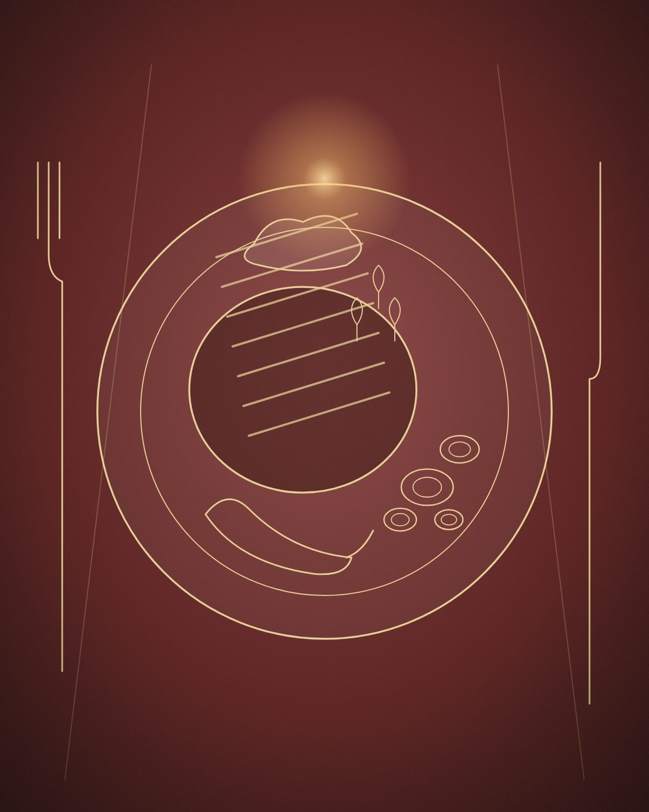
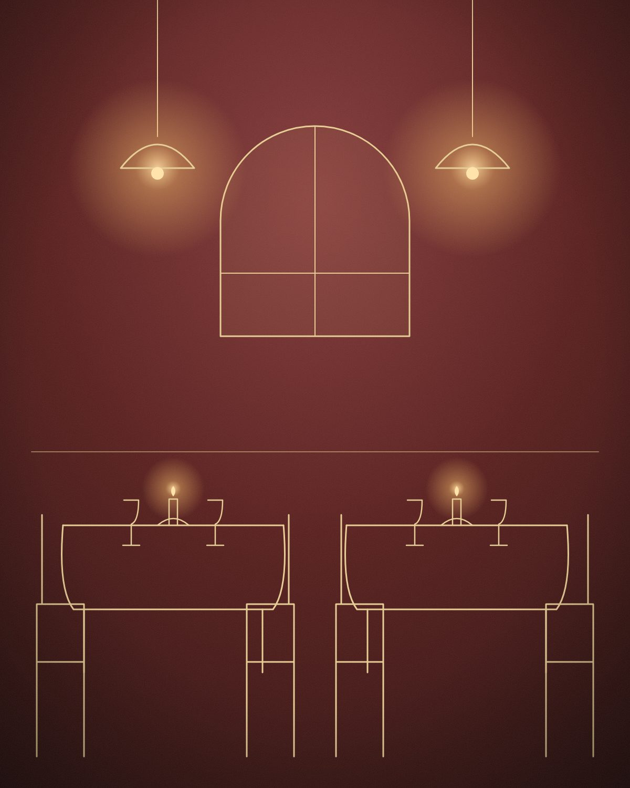
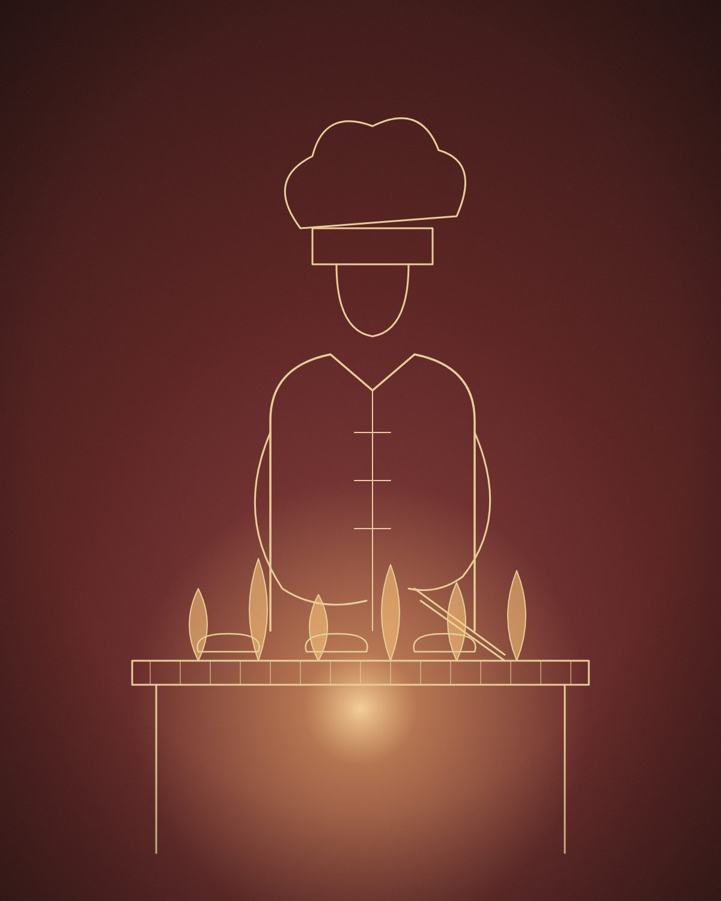
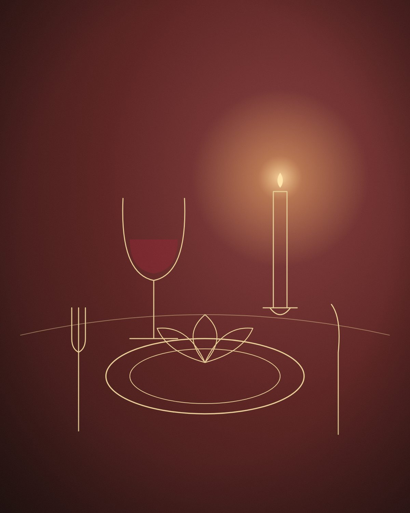

Mirë se vini në Santos

Restorant · Reçan, Prizren · Që nga 1985
Shije e rafinuar, mikpritje e sinqertë, në qetësinë e Reçanit.
Santos është një vend për të ngadalësuar ritmin: një tavolinë e shtruar me kujdes, pjata të përgatitura me pasion dhe një atmosferë e ngrohtë që ju bën të ndiheni të mirëpritur që në hapin e parë.

Restaurant Santos · Reçan
Menuja
Mbi 90 pjata — sallata, paragjella, specialitete nga skara, mishra të pjekur dhe verëra të zgjedhura.
Më shumë
Restaurant Santos · Reçan
Rreth nesh
Santos lindi nga një ide e thjeshtë: ushqim i përgatitur me kujdes, përbërës të freskët dhe një ambient ku mysafiri ndihet si në shtëpi — por pak më i veçantë.
Më shumë
Restaurant Santos · Reçan
Kuzhina
Nga zgara te specialitetet e shtëpisë, çdo pjatë përgatitet në momentin që e porosisni — me durim, me mjeshtëri dhe me dashuri për zanatin.
Më shumë
Restaurant Santos · Reçan
Vlerësimet
4.9 nga 5 yje në Google — lexoni çfarë thonë mysafirët tanë.
Më shumë